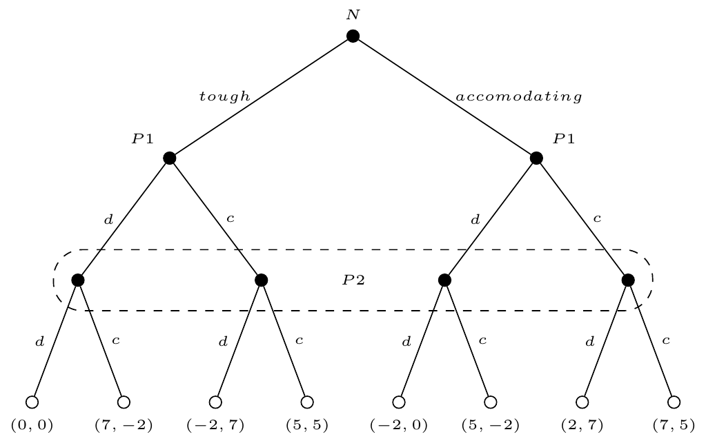
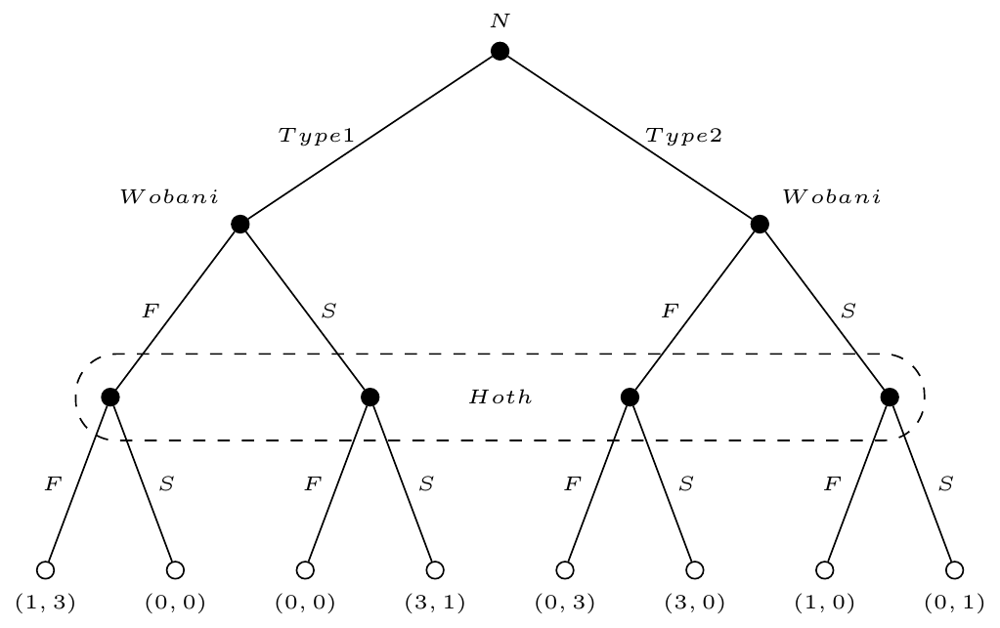
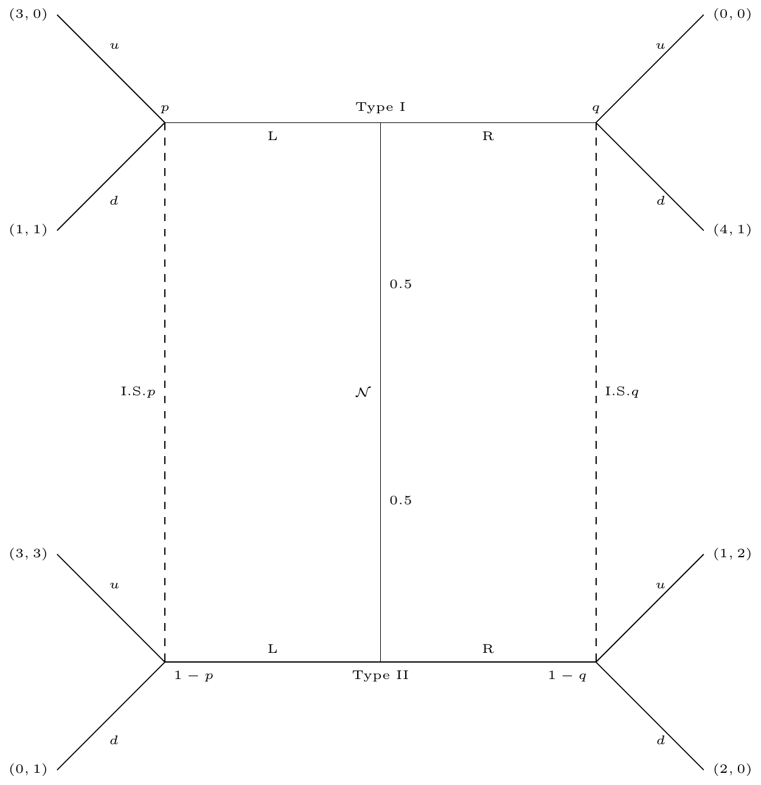

Games under
Asymmetric Information
Prague University of Economics and Business
Faculty of Informatics and Statistics
Moral Hazard and Incentives Theory
Moral Hazard
Definition
Moral Hazard is a term that refers to the situation when an person acts when she does not bear the full (good or bad) consequences of her acts.
For example if you own a 🚗, and if you crash it, you will have to pay all the costs with fixing it 🔧.
Now, if you have insurance, these costs pass along to the insurer. It is expected that you would drive less carefully than without insurance.
Moral Hazard
The true cause of the problem is that the Insurance Company cannot know, at every moment, how are you driving. Of course there are some things that are present in the contract:
- They will not pay if you were speeding.
- They will not pay if you were driving under the influence of drugs.
- etc.
But there are a plethora of irresponsible behavior that the company cannot monitor.
Moral Hazard
In this case, the person who has to act and has private information on his actions, is known as the agent, while who is bearing the consequences of the actions of the agent is called the principal.
At the core this is a problem of missaligned incentives: what is good for the agent, might not be necessarily good for the principal.
Moral Hazard
What to do then?
Principals have to design schemes that incentive the agent to behave more in line with the Principal’s goals. Of course, these incentives are costly.
A Principal-Agent model
Suppose the following alternative setup:
- \(e\) is effort exherted by the Agent, with cost \(c(e)=\frac{e^2}{2}\).
- Let \(x(e)=x\cdot e\) the return expected for the Principal.
- Suppose the contract is based on a compensation \(w(x)=a+bx\). Note that \(b\leq 1\), otherwise the Principal loses money, it would be giving away everything and then some.
- Suppose the Agent can get utility \(\underline{u}\) in an alternative job.
First Best
The Principal observes \(e\). The contract must be such that:
- The agent accepts to sign the contract: \[a+bxe-\frac{e^2}{2}\geq \underline{u}\] this is the participation constraint.
- Maximizes the Principal’s expected utility, i.e. it solves: \[\max_{e,a,b}\ xe -a-bxe\]
First Best
Note that the Principal has no incentive to give more than the strictly necessary to make the Agent sign the contract (first best, \(e\) is observable), then the participation constraint will be binding.
\[a+bxe-\frac{e^2}{2}= \underline{u}\]
We can substitute this into the Principal’s maximization problem.
First Best
\[\max_{e}\ xe-\frac{e^2}{2}\]
With FOC:
\[x-e^*=0\quad\Rightarrow\quad e^*=x\]
This is the socially optimal level of effort, which will yield an output \(x^2\) and set \(a\) and \(b\) such that \(a+bx^2=\underline{u}+\frac{x^2}{2}\). In particular \(a=\underline{u}\) and \(b=\frac{1}{2}\) would work.
Second Best
Now assume the Principal cannot observe \(e\). What will the Agent do when offered a contract \(a+bx(e)\)?
The agent will solve:
\[\max_{\hat{e}} a+bx(\hat{e})-\frac{\hat{e}^2}{2}\]
And choose \(e = bx < x\). Note that the larger the bonus, the more effor the Agent will exhert! \(a\) seems to be irrelevant for the amount of effort exherted.
Second Best
This is an anomaly, as people usually are not risk neutral. Let’s assume \(u()\) such that \(u'>0\) and \(u''<0\). Now the problem becomes:
\[\max_{\hat{e}} u(a+bx\hat{e})-\frac{\hat{e}^2}{2}\]
And the FOC will be: \[e=u'(a+bxe)bx\] now we can see that a larger value of \(a\) will actually decrease the level of effort. Now let’s go back to the risk neutral case.
Second Best
Of course, the Principal will know the Agent is planning her effort level as a function of \(a\) and \(b\), so she needs to be careful setting those values
\[ \begin{aligned} \max_{e,a,b}\ &xe-a+-bxe\\ \text{s.t.}\quad &a+bxe-\frac{e^2}{2}=\underline{u}\\ &e\in\arg\max_{\hat{e}} a + bxe - \frac{e^2}{2} \end{aligned} \]
This last equation is the incentive compatiblity constraint.
Second Best
Substituting the IC for its solution and rearranging we have:
\[ \begin{aligned} \max_{e,a,b}\ &-a+(1-b)xe\\ \text{s.t.}\quad &a+bxe-\frac{e^2}{2}=\underline{u}\\ &e=bx \end{aligned} \]
We can substitute the \(IC\) in the maximization problem and \(PC\) to get
Second Best
And substituting in the maximization problem yields
\[ \begin{aligned} \max_{a,b}\ &-a+(1-b)bx^2\\ \text{s.t.}\quad &a+\frac{(bx)^2}{2}=\underline{u} \end{aligned} \]
And further substituting the \(PC\) in the maximization problem we have:
Second Best
\[ \max_{b}\ -\left(\underline{u}-\frac{(bx)^2}{2}\right)+(1-b)bx^2 \]
which is equivalent to:
\[ \max_{b}\ -\underline{u}+\left(1-\frac{b}{2}\right)bx^2 \]
With \(FOC:\) \(x^2=b^*x^2\), or \(b^*=1\). What does this mean?
Second Best
Remember we discussed briefly the situation of a utility function \(u()\) with \(u'()>0\) and \(u''<0\) for the agent? Why just for the agent?
We could do that for the principal as well, but usually we can assume firms as risk neutral because shareholders can get rid of the risk by building a diversified portfolio. This is not the case for the agent. We will think on both cases.
Second Best
Let’s assume now that:
- Returns to effort are \(x(e)\) is distributed with mean \(xe\) and variance \(s^2\).
- If the contract establishes \(a\) as base salary and \(b\) as variable pay, the wage is a random variable with mean \(a+bxe\) and variance \(b^2s^2\).
- Suppose the agent is risk averse, so the utility function is now \[u=a+bxe-\frac{Ke^2}{2}-\frac{\rho b^2s^2}{2}\] Now \(K\) allow us to measure the cost of the effort, and \(\rho\) captures the level of risk aversion of the agent.
Second Best
Now, given \(a\) and \(b\), what is hte optimal level of effort?
\[e^*=\frac{bx}{K}\]
The only difference, is that the most costly effort is, the lower the optimal level of effort for the same compensation. [Homework: Introduce \(K\) in the previous solution and check that the solution is the same]
Second Best
The principal’s problem is:
\[ \begin{aligned} \max_{e,a,b}\ &xe-a+-bxe\\ \text{s.t.}\quad &a+bxe-\frac{Ke^2}{2}-\frac{\rho b^2s^2}{2}=\underline{u}\\ &e\in\arg\max_{\hat{e}} a + bxe - \frac{e^2}{2}-\frac{\rho b^2s^2}{2} \end{aligned} \]
Again, we can replace the \(IC\)
Second Best
\[ \begin{aligned} \max_{e,a,b}\ &xe-a+-bxe\\ \text{s.t.}\quad &a+bxe-\frac{Ke^2}{2}-\frac{\rho b^2s^2}{2}=\underline{u}\\ &e=\frac{bx}{K} \end{aligned} \]
And we can replace the \(IC\) the the \(PC\) and the maximization problem.
Second Best
\[ \begin{aligned} \max_{a,b}\ &-a+(1-b)\frac{bx^2}{K}\\ \text{s.t.}\quad &a+\frac{(bx)^2}{K}-\frac{(bx)^2}{2K}-\frac{\rho b^2s^2}{2}=\underline{u} \end{aligned} \]
Second Best
\[ \begin{aligned} \max_{a,b}\ &-a+(1-b)\frac{bx^2}{K}\\ \text{s.t.}\quad &a+\frac{(bx)^2}{2K}-\frac{\rho b^2s^2}{2}=\underline{u} \end{aligned} \] And further substituting \(a\) into the maximization problem we obtain:
Second Best
\[ \begin{aligned} \max_{b}\ &-\left(\underline{u}-\frac{(bx)^2}{2K}+\frac{\rho b^2s^2}{2}\right)+(1-b)\frac{bx^2}{K} \end{aligned} \]
Second Best
With FOC: \[\frac{bx^2}{K}-\rho s^2 b+\frac{(1-2b)x^2}{K}=0\] \[bx^2-\rho s^2Kb+(1-2b)x^2=0\] \[-\rho s^2Kb+(1-b)x^2=0\]
Second Best
\[b^*=\frac{x^2}{\rho s^2 K + x^2}\]
Note this is:
- Increasing in \(x^2\)
- Decreasing in \(K\)
- Decreasing in \(\rho\) and \(s^2\).
Games with Incomplete Information
Incomplete Information
Games where players are uncertain about:
- Payoffs of other players
- Available strategies of opponents
- Types of players they face
Key distinction: Players know their own type but are uncertain about others’ types
Example 1
Consider two candidates campaigning for some election
- Each player can run a “clean” campaign, or
- Each player runs a “dirty” campaign
| P1-P2 | dirty | clean |
|---|---|---|
| dirty | (0,0) | (7,-2) |
| clean | (-2,7) | (5,5) |
Example 1
Now suppose that:
- Player 2 is as we know, for him, playing dirty is a dominant strategy.
- Player 1’s preferences are unknown to player 2, he can be tough (he is like P2) or accomodanting (clean is dominant).
- P1 knows exactly the payoff matrix (he knows his type), but P2 does not.
Example 1
| P1-P2 | dirty | clean |
|---|---|---|
| dirty | (0,0) | (7,-2) |
| clean | (-2,7) | (5,5) |
P1 is tough
| P1-P2 | dirty | clean |
|---|---|---|
| dirty | (-2,0) | (5,-2) |
| clean | (0,7) | (7,5) |
P1 is accomodating
Because this game has dominant strategies, the \(NE\) is easy to spot, \((d,dc)\), i.e., each player (type) plays his dominant strategy.
Example 1

Example 1
As expected, this is the simplest scenario we could face, an equlibrium with dominant strategies. This will not be the case, and we will need to study the beliefs of players regarding the other player’s type.
Example 2
- Suppose there are two planets trying to settle their diplomatic relationships, Hoth and Wobani.
- They have to decide if they will be sign a Free Trade Agreement or they will sign a Security pact.
- Hoth is a pacifist country, and prefers to focus in trade, while Hoth is concerned with their security, and then they would prefer a security pact.
- Wobani’s diplomatic team can be one of two types, integrationist or isolationist. This is unknown to Hoth’s diplomatic team.
Example 2
| H - W | \(F\) | \(S\) |
|---|---|---|
| \(F\) | (3,1) | (0,0) |
| \(S\) | (0,0) | (1,3) |
W is Integrationist (type 1)
| H - W | \(F\) | \(S\) |
|---|---|---|
| \(F\) | (3,0) | (0,1) |
| \(S\) | (0,3) | (1,0) |
W is Isolationist. (type 2)
Example 2
- W knows exactly her type.
- Given that H does not know the type of W, it will a probability \(p\) to the scenario in which W is integrationist.
- Let’s assume that W knows \(p\).
The method to solve these games was developed by the Hungarian economist John Harsanyi.
Example 2
- Turn this game into an Imperfect Information Game. Introduce \(N\) as a player.
- Use the \(NE\) concept we used for imperfect information games (SPNE). This will be called Bayes Nash Equilibrium.
Bayesian Games Framework
A Bayesian game consists of:
- Set of players \(N = \{1, 2, ..., n\}\)
- Type spaces \(T_i\) for each player \(i\)
- Prior beliefs \(p(t)\) over type profiles
- Action spaces \(A_i\) for each player
- Payoff functions \(u_i(a, t)\) depending on actions and types
Players maximize expected utility given beliefs about opponents’ types
Bayesian Nash Equilibrium
A strategy profile where each player’s strategy is optimal given:
- Their beliefs about other players’ types
- The strategies of other players
Formally: \(s_i^*(t_i) \in \arg\max_{a_i} \sum_{t_{-i}} p(t_{-i}|t_i) u_i(a_i, s_{-i}^*(t_{-i}), t_i, t_{-i})\)
Each type of each player best responds to opponents’ strategies in expected utility
Example 2
In this case:
- A strategy for H is:
- pure strategies, just \(F\) or \(S\)
- mixed strategies, \(\lambda\in(0,1)\) where \(\lambda\) is the probability of playing \(F\).
- A strategy for W is:
- pure strategies, a pair of \(F\) or \(S\) for each type.
- mixed stragies, a pair \((\mu_1,\mu_2)\) for the probability of playing \(F\) for each type.
Example 2
A Bayes Nash Equilbrium (BNE) will be a triple \((\lambda, \mu_1,\mu_2)\) in which each player (and each type of player) will play a best response as follows:
- \(\mu_i\) maximizes type’s \(i\) W expected payoffs, if H choses \(F\) with probability \(\lambda\).
- \(\lambda\) maximizes H’s expected payoffs if H believes that with probability \(p\) she will encounter W type 1, that will play \(F\) with probability \(\mu_1\).
Example 2

Example 2: Pure Strategies
- Suppose \(H\) plays \(F\) for sure.
- In this case, \(W\) will play \(FS\).
But can this be an equilibrium?
If so, H must stick with \(F\), \(i.e.\) \(F\) must be a best response to W strategy’s \(FS\).
Example 2: Pure Strategies
Remember, H expects W to be type 1 with probability \(p\), so her expected payoffs are:
- \(E[\pi_H(F,FS)]=p3+(1-p)0=3p\)
- \(E[\pi_H(S,FS)]=p0+(1-p)1=1-p\)
If H is to stick with \(F\) when W is playing \(FS\), then it must be true that:
\[3p\geq 1-p\ \Rightarrow\ p\geq \frac{1}{4}\]
Example 2: Pure Strategies
- Suppose now that H plays \(S\) for sure.
- In this case, W will play \(SF\).
But can this be an equilibrium? If so, H must stick with \(S\), \(i.e.\) \(S\) must be a best response to W strategy’s \(SF\).
Example 2: Pure Strategies
Remember, H expects W to be type 1 with probability \(p\), so her expected payoffs are:
- \(E[\pi_H(F,SF)]=p0+(1-p)3=3(1-p)\)
- \(E[\pi_H(S,SF)]=p1+(1-p)0=p\)
If H is to stick with \(S\) when W is playing \(SF\), then it must be true that:
\[3(1-p)\leq p\ \Rightarrow\ p\geq \frac{3}{4}\]
Example 2: Pure Strategies
Conclusion:
- If \(p\geq \frac{3}{4}\) there are 2 BNEs, \((F,FS)\) and \((S,SF)\).
- If \(\frac{1}{4}\leq p < \frac{3}{4}\) there is only 1 BNE, \((F,FS)\).
- If \(p<\frac{1}{4}\) there is no BNE in pure strategies.
Example 2: Mixed Strategies
Important
Remember that in the case of mixed strategies, to randomize, each pure strategy with positive probability must be yield the same expected payoff.
There can be a plethora of NEs in mixed strategies, let’s focus on a special situation, when \(p<\frac{1}{4}\) which is a situation when we know for sure there is no pure strategy \(BNE\).
Example 2: Mixed Strategies
- Suppose H plays \(F\) with probability \(\lambda\).
- Type 1 W has expected payoff \(\lambda\) by playing \(F\), while playing \(S\) can expect \(3(1-\lambda)\).
- Type 2 W has expected payoff by playing \(F\) \(3(1-\lamdba)\), while playing \(S\) can expect \(\lambda\).
Example 2: Mixed Strategies
- W type 1 would play a mixed strategies equilibrium only if \(\lambda=3(1-\lambda)\), or \(\lambda=\frac{3}{4}\).
- W type 2 would play a mixed strategies equilibrium only if \(3(1-\lambda)=\lambda\), or \(\lambda=\frac{3}{4}\).
Example 2: Mixed Strategies
A BNE of this game is \(\lambda=\frac{3}{4}\), \((\mu_1,\mu_2)=\left(\frac{1}{4},\frac{1}{4}\right)\)
Mechanism Design, the Revelation Principle, and Sales to an Unknown Buyer
Mechanism Design
- So far we have studied what players will do, given a set of rules and payoffs (not entirely true, i.e. Contracts)
- Mechanism Design asks, if I want a specific outcome:
- What de rules must be?
- Is it even possible?
Basically now we design the game to induce the players to play in a specific manner.
Mechanism Design
In general, the set of players is something that will be given, i.e. is something we cannot design, but the designer can choose:
- choices available to players
- payoffs
Mechanism Design
However, there are some constraints for the designer
- There cannot be any coercion (why would you need to incentivize behavior if you can force it)
- Players can choose to not participate, and therefore the game must give enough incentives to make players want to play.
The optimal design is a mechanism whose equilibrium is the one that generates the highest payoff for the designer.
Mechanism Design
More formally:
Definition
A mechanism is a game (a set of rules) that specifies the strategies that the player can choose from and the outcome for every choice.
Mechanism Design
- Let a strategy for a player \(s\).
- Let the outcome of a game be denoted by \(t\).
- Let the type of the player be denoted by \(\theta\).
- Let the payoff of the player be represented by the function \(\pi(s,t,\theta)\).
The designer can choose \(s\) and \(t\), but \(\theta\) and \(\pi\) is out of his control.
Mechanism Design
Definition
Suppose there are two types \(\theta\) and \(\mu\). The designer assigns \((s_{\theta},t_{\theta})\) as strategies and outcomes for the player type \(\theta\), and \((s_{\mu},t_{\mu})\) for the player type \(\mu\).
A design is said to be incentive compatible if:
\[\pi(s_{\theta},t_{\theta},\theta)\geq \pi(s,t,\theta)\quad \forall s,\ \forall t\] and \[\pi(s_{\mu},t_{\mu},\mu)\geq \pi(s,t,\mu)\quad \forall s,\ \forall t\]
This is, every player’s type has incentives to tell the truth.
Mechanism Design
Definition
Suppose there are two types \(\theta\) and \(\mu\), with reservation utility \(\underline{\pi}_{\theta}\) and \(\underline{\pi}_{\mu}\).
A design is said to be idividually rational if:
\[\pi(s_{\theta},t_{\theta},\theta)\geq \underline{\pi}_\theta\] and \[\pi(s_{\mu},t_{\mu},\mu)\geq \underline{\pi}_\mu\]
This is, every player’s type has incentives to participate.
Mechanism Design
Without much surprise we call the designer the Principal.
Any design the Principal devices to maximize her expected payoff must be incentive compatible and individually rational. Her payoff usually depends on the strategies chosen by the players.
For surprise to no one, there as infinite number of ways in which a Principal can set a mechanism, however we will focus on the class named direct-revelation mechanisms.
Mechanism Design
Direct-revelation mechanism:
- Each player is free to lie about his type. \(\theta\) can claim to be \(\mu\) if so desires, and vice-versa.
- Suppose that if you claim to be type \(\theta\), the mechanism assings you \((s_\theta,t_\theta)\), and \((s_\mu,t_\mu)\) for the \(\mu\) type
- Incentive Compatibility \(\Rightarrow\) every type optimally tells the true.
- Individual Rationality \(\Rightarrow\) every type will participate.
Mechanism Design
Proposition
For any mechanism and an IC-IR assignment, there is a direct-revelation mechanism in which truth telling is incentive compatible, individually rational, and which produces an indentical assignment. Hence a principal can restrict attention to direct-revelation mechanisms and truth-telling assignments within those mechanisms.
Mechanism Design
- Consider again two players, and two types, \(\theta\) and \(\mu\).
- Suppose there is a common prior probability that type \(\theta\) has a likelihood \(\rho\).
- Suppose the assignments for each type will be \((s_i^\tau,t_i^\tau)\), with \(i=1,2\) and \(\tau=\theta,\mu\).
- Note now, that each player can be either \(\theta\) or \(\mu\).
Mechanism Design
- Let \(E[\pi_i(s_i^\tau,t_i^\tau,\tau)]\) denote the expected payoff for player \(i\), type \(\tau\) when telling the truth.
- Players’s payoff (realized) will depend on their actions, but also on the other player’s actions, then: \[E[\pi_i(s_i^\tau,t_i^\tau,\tau)]=\rho \pi_i(s_i^\tau,t_i^\tau,s_{-i}^\theta,s_{-i}^\theta,\tau)+(1-\rho)\pi_i(s_i^\tau,t_i^\tau,s_{-i}^\mu,s_{-i}^\mu,\tau)\]
Mechanism Design
Now, \((s_i^\tau,t_i^\tau)\) are going to form a BNE only if they are best responses to each type of player, i.e. for \(i=1,2\)
\[ \begin{aligned} E[\pi_i(s_i^\theta,t_i^\theta,\theta)] &\geq E[\pi_i(s,t,\theta)]\quad \forall\ (s,t)\\ E[\pi_i(s_i^\mu,t_i^\mu,\mu)] &\geq E[\pi_i(s,t,\mu)]\quad \forall\ (s,t) \end{aligned} \]
It seems we have been going around in circles, but it is important to check: in this direct-revelation mechanism, truth telling is a BNE.
Mechanism Design
Proposition
For any mechanism and any BNE of that mechanism, there is a direct-revelation mechanism with truth telling as a BNE that has an identical assignemnt. Hence a principal can restrict atention to direct-revelation mechanisms and truth-tellign equilibria within those mechanisms.
Mechanism Design
Attention
It might not be optimal for the Principal to enforce a mechanism that satisfies participation constraint. For example, if extracting the truth from the players, it might be better just to leave some players out of the game at all.
Example
The government wants a firm to produce a certain amount of a good (public procurement).
- \(S(q)=2\sqrt{q}\) is the government’s utility as a function of quantity produced by the firms
- The firm has a \(\underline{u}=0\), and production cost \(c(q,\alpha)=\frac{41}{90}+\alpha q\).
- Marginal cost \(\alpha\), (private information) can be of two types, \(\alpha_l=1\) and \(\alpha_h=2\), each with probability \(p=\frac{1}{2}\).
- Contracts take the shape of a transfer \(t_i\) and a quantity to be delivered \(q_i\) by the firm \((q_i,t_i)\).
Example
Let’s start with the individual rationality constraints (or participation constraints):
\[ \begin{aligned} \alpha=1 \ \rightarrow\ &t_l-\frac{41}{90}-q_l\geq 0\\ \alpha=2 \ \rightarrow\ &t_h-\frac{41}{90}-2q_h\geq 0 \end{aligned} \]
Example
Now the Incentive Compatibility are:
\[ \begin{aligned} \alpha=1 \ \rightarrow\ &t_l-\frac{41}{90}-q_l\geq t_h-\frac{41}{90}-q_h\\ \alpha=2 \ \rightarrow\ &t_h-\frac{41}{90}-2q_h\geq t_l-\frac{41}{90}-2q_l \end{aligned} \]
Example
If the government could observe the type…
\[ \begin{aligned} \max_{q}\ & 2\sqrt{q}-\overbrace{\frac{41}{90}-\alpha q}^{t}\\ FOC\quad & \frac{1}{\sqrt{q^*}}-\alpha=0\\ & \alpha=\frac{1}{\sqrt{q^*}}\Rightarrow q^*=\frac{1}{\alpha^2} \end{aligned} \]
Example
Which replacing in the IR implies \(t=\frac{41}{90}+\frac{1}{\alpha}\).
That gives us a contract \(\left(1,\frac{131}{90}\right)\) for the efficient firm, and \(\left(\frac{1}{4},\frac{86}{90}\right)\) for the inefficient one.
What about when the Government does not know the type of the firm?
Example
The problem is:
\[ \begin{aligned} \max_{q_h,t_h,q_l,t_l}\quad&\frac{1}{2}[2\sqrt{q_h}-t_h]+\frac{1}{2}[2\sqrt{q_l}-t_l]\\ s.t.\quad& t_l-\frac{41}{90}-q_l\geq t_h-\frac{41}{90}-q_h\\ &t_h-\frac{41}{90}-2q_h\geq t_l-\frac{41}{90}-2q_l\\ &t_l-\frac{41}{90}-q_l\geq 0\\ &t_h-\frac{41}{90}-2q_h\geq 0 \end{aligned} \]
Example
Note:
\[ \begin{aligned} \overbrace{t_l-\frac{41}{90}-q_l\geq t_h-\frac{41}{90}-q_h}^{IC_l}\geq \underbrace{t_h-\frac{41}{90}-2q_h\geq 0}_{IR_h} \end{aligned} \]
\[\Rightarrow\quad t_l-\frac{41}{90}-q_l\geq0\]
We conclude that, if the \(IC_l\) and \(IR_h\) are binding, then the \(IR_l\) for the good type is satisfied.
Example
If \(IC_l\) is binding, then \[ \begin{aligned} t_l-\frac{41}{90}-q_l &= t_h-\frac{41}{90}-q_h\\ t_l-\frac{41}{90}-q_l-q_h &= t_h-\frac{41}{90}-2q_h\\ t_l-\frac{41}{90}-2q_l+\underbrace{(q_l-q_h)}_{\geq 0} &= t_h-\frac{41}{90}-2q_h\\ \Rightarrow\quad t_l-\frac{41}{90}-2q_l &\leq t_h-\frac{41}{90}-2q_h \end{aligned} \] The \(IC_h\), if \(IC_l\) is binding, then \(IC_h\) is satisfied.
Example
Now the problem is: \[ \begin{aligned} \max_{q_h,t_h,q_l,t_l}\quad&\frac{1}{2}[2\sqrt{q_h}-t_h]+\frac{1}{2}[2\sqrt{q_l}-t_l]\\ s.t.\quad& t_l-\frac{41}{90}-q_l= t_h-\frac{41}{90}-q_h\\ &t_h-\frac{41}{90}-2q_h= 0 \end{aligned} \]
Example
From the \(IR_h\), we get:
\[t_h=\frac{41}{90}+2q_h\]
And replacing in the \(IC_l\) we get:
\[t_l=\frac{41}{90}+q_l+q_h\]
Example
Replacing in the objective function,
\[ \begin{aligned} \max_{q_h,q_l}\quad&\frac{1}{2}\left[2\sqrt{q_h}-\frac{41}{90}-2q_h\right]+\frac{1}{2}\left[2\sqrt{q_l}-\frac{41}{90}-q_l-q_h\right]\\ \max_{q_h,q_l}\quad&-\frac{41}{90}+\sqrt{q_h}+\sqrt{q_l}-\frac{3}{2}q_h-\frac{1}{2}q_l \end{aligned} \]
Example
Whith FOCs:
\[ \begin{aligned} \frac{1}{2\sqrt{q_h}}&=\frac{3}{2}\Rightarrow q_h=\frac{1}{9}\quad\Rightarrow\quad t_h=\frac{61}{90}\\ \frac{1}{2\sqrt{q_l}}&=\frac{1}{2}\Rightarrow q_l=1\quad\Rightarrow\quad t_l=\frac{141}{90} \end{aligned} \]
Example
The expected utility for the Government is:
\[ \begin{aligned} \frac{1}{2}\times\frac{-1}{90}+\frac{1}{2}\times\frac{39}{90} = \frac{38}{180} \end{aligned} \]
This is the utility the government gets by offering a menu of contracts in which everybody participates and reveal their types.
Example
If the Government offers a contract \(l\) (cream-skimming), the profits for the \(l\) firm are zero, by construction. The profits for the \(h\) firm are: \[\frac{131}{90}-\frac{41}{90}-1(\alpha=2)=\frac{90}{90}-2=-1<0\] So the inefficient firm will reject the contract.
Example
With that, the expected utility of the Government is: \[\frac{1}{2}\left(2\sqrt{1}-\frac{131}{90}\right)+\frac{1}{2}(0)=1-\frac{131}{180} = \frac{49}{180}\]
Which is better than the menu of contracts.
Auctions
Auctions
Auctions are, probably, the most transparent mechanism.
- Auctioneer does not know the player’s individual valuations.
- Auctioneer wants to extract as much money as she can from bidders.
- Auctions are used to sell or buy items (procurement). In particular, governments use these competitive process to optimize revenue or minimize costs.
Auctions
There are many types of auctions, however we could identify the 4 most important:
- English Auction - Ascending Auction
- Dutch Auction - Descending Auction
- First Price Sealed Bid Auction
- Second Price Sealed Bid Auction - Vickrey Auction
Auctions
We will focus the attention to auctions where the auctioneer wants to sell an item. For policy, these could be teasury bills (yes, they are auctioned), exploration rights, licences, etc.
Auctions
Basic model:
- Single unit good being sold
- Two buyers. Valuations can be high (\(\theta\)) or low (\(\mu\)).
- Both types are equally likely and valuations are independent.
- Seller wants to maximize expected sale price.
- If the bidder wins, his payoff will be \(v-p\), with
- \(v=\theta,\mu\)
- \(b\) is the bid, \(p\) is the price bidder must pay
Auctions
Second Price Auctions
We already talked about these auctions:
Proposition 1
In a second-price auction, it is a dominant strategy for each player to bid exactly his valuation of the object.
Auctions
There are 4 possible scenarios (two of them identical):
- Both bidders are \(\theta\)
- Both bidders are \(\mu\)
- One bidder is \(\theta\) and the other is \(\mu\)
Auctions
In scenario 1 (with \(\frac{1}{2}\times\frac{1}{2}=\frac{1}{4}\) probability):
- Both bidders bid \(b=\theta\)
- Second highest bid is \(b'=\theta\), then price is \(\theta\).
- The probability of winning is \(1/2\)
- Expected bidder’s payoff is then \(\frac{1}{2}(\theta-\theta)=0\).
- Revenue for the auctioneer is \(\theta\)
Auctions
In scenario 2 (with \(\frac{1}{2}\times\frac{1}{2}=\frac{1}{4}\) probability):
- Both bidders bid \(b=\mu\)
- Second highest bid is \(b'=\mu\), then price is \(\mu\).
- The probability of winning is \(1/2\)
- Expected payoff is then \(\frac{1}{2}(\mu-\mu)=0\).
- Revenue for the auctioneer is \(\mu\)
Auctions
In scenario 3 (with \(2\times\frac{1}{2}\times\frac{1}{2}=\frac{1}{2}\) probability):
- One bidder bids \(\theta\) the other bids \(\mu\).
- Price is \(\mu\)
- Probability of winning is 1 for \(\theta\), 0 for \(\mu\).
- Expected payoff is \(\theta-\mu\)
- Revenue for the auctioneer is \(\mu\).
Auctions
What is the expected revenue for the Auctioneer then?
\[\frac{1}{4}\theta+\frac{1}{4}\mu+\frac{1}{2}\mu=\frac{\theta+3\mu}{4}\]
Auctions
First-Price Auctions
Now, there is no obvious dominant strategy.
We need to use the concept of BNE.
We need to look for a best response, i.e. a pair \((p,q)\) such that \(p\) is the best response to \((p,q)\) from the other player, when the bidder is type \(\theta\), and the same for \(q\) when the bidder is type \(\mu\).
Auctions
In this case truthful bidding is not a BNE. This would ensure a payoff of 0!
In that case, necessarily \(p<\theta\) and \(q<\mu\).
Auctions
Consider the case of a bidder type \(\theta\). Suppose this bidder chooses a pure strategy \(p<\theta\). Can this be a BNE? If so, another player type \(\theta\) must maximize his expected payoff by bidding also \(p\), but is this the case?
. . .
If \(p<\theta\) fixed, then if the second bidder bids \(p\), his expected payoff is \(\frac{\theta-p}{2}\), but if he bidds \(p+\epsilon\) for some \(\epsilon>0\), then he can get \(\theta-p-\epsilon>\frac{\theta-p}{2}\).
Warning
There is no BNE with pure strategies for the type \(\theta\)
Auctions
For a bidder type \(\mu\), clearly setting \(q=\mu\) is a best response. Note that when facing a type \(\theta\) the expected payoff is \(0\), as he always loses. Now against a type \(\mu\), if it would bid \(q<\mu\), then again, for a simmilar argument we used before, it could be outbid by the opponent type \(\mu\) by \(\epsilon\).
Tip
Why we did not use the same argument for the bidder type \(\theta\) and arrived to the conclusion that \(p=\theta\) was the only possibility? What is the difference between a bidder type \(\theta\) and a bidder type \(\mu\)?
Auctions
Proposition 2
There is a symmetric BNE of the First-Price auction in which the \(\mu\) type buyer bids his valuation while the \(\theta\) type buyer plays a mixed strategy that assigns probability to all bids between \(\mu\) and \(\frac{\theta+\mu}{2}\). For any bid \(b\) between those extremes, the probaiblity that the bid will be less than \(b\) is given by \(\frac{b-\mu}{\theta-b}\).
Auctions
Let’s consider the type \(\theta\). By bidding \(b\) between \(\mu\) and \(\frac{\theta+\mu}{2}\), the probability of beating a \(\theta\) opponent (playing the same strategy) is \(\frac{b-\mu}{\theta-b}\).
- Plays against \(\theta\), the expected profit is \((\theta-b)\left(\frac{b-\mu}{\theta-b}\right)\). This happens half the time (the probability the rival is \(\theta\) as well).
- Plays against \(\mu\), wins for sure, expected profit is just \((\theta-b)\).
- \[E[\pi|b]=\frac{1}{2}(\theta-b)\left(\frac{b-\mu}{\theta-b}\right)+\frac{1}{2}(\theta-b)=\frac{\theta-\mu}{2}\]
- Actually, the expected payoff does not depend on \(b\)!
Auctions
It is indifferent any \(b\in\left[\mu,\frac{\mu+\theta}{2}\right]\) for the type \(\theta\), so any mixed strategy that randomizes here is fine, in particular the one proposed. If it bids less it will get the same profit (no profitable deviations). If it bids more, then he will be losing (overbidding) in the case he faces a \(\mu\) type bidder, which happens half the time!
Auctions
This is the logic to find that function. In a mixed strategy any bid in the support must yield the same expected payoff, in particular \(b=\mu\), so we have:
\[(\theta-b)P(b)=(\theta-\mu)P(\mu) \Leftrightarrow P(b)=\frac{\theta-\mu}{\theta-b}P(\mu)\]
With \(P(b)\) the probability of a bid \(b\) wins. Note that \(\frac{\theta-\mu}{\theta-b}=\frac{(\theta-b)+(b-\mu)}{\theta-b}\) so we have:
\[P(b)=\left(1+\frac{b-\mu}{\theta-b}\right)P(\mu)\]
The probability must increase by \(\frac{b-\mu}{\theta-b}\)
Auctions
What is the expected payoff for the auctioneer?
First we need to find out what \(\theta\) will pay. We know \(\theta\) wins \(3/4\) of the time, and the expected payoff is \(\frac{\theta-\mu}{2}\), then
\[\theta P(\theta) - M(\theta)=\frac{\theta-\mu}{2}\]
Where \(P(\theta)\) is the probability of winning and \(M(\theta)\) is the expected payment.
Auctions
\[\theta \frac{3}{4} - M(\theta)=\frac{\theta-\mu}{2}\]
From where we obtain
\[M(\theta)=\frac{\theta+2\mu}{4}\]
Auctions
Given that \(\mu\) type wins \(1/4\) of the time, the expected revenue for the auctioneer is:
\[\frac{\theta+2\mu}{4}+\frac{\mu}{4}=\frac{t\theta+3\mu}{4}\]
Which is exactly the same he had in the second price auction!
Signaling Games and The Lemons Problem
Signaling Games
In incomplete information games, at least one player knew something that would affect both player’s payoffs. In some circumstances, the player might be interested in doing an action to signal this information to the other players.
Signaling Game
Suppose that:
- there are two players.
- Player 1’s type is private information (\(\theta\), \(\mu\)).
- The probability player 1 is type \(\theta\) is \(\rho\).
- Player 1 sends a signal \(s\) to player 2, who acts after observing \(s\)
- Denote P1’s payoffs as \(\pi_1(s,t,T)\) with \(T\in\{\theta,\mu\}\).
- Denote P2’s payoffs as \(\pi_2(s,t,T)\), it depends on P2’s type.
Signaling Game
A strategy in equilibrium for P2 needs to be an action that depends on the signal, i.e., depends on what P2 observes P1 did: \[t(s)\]
P2 does not know \(\rho\), but it will estimate it based on \(s\), so let’s call this estimate \(\rho(s)\).
Signaling Game
Definition
A Perfect Bayesian Equilibrium (PBNE) is given by:
- Best respose of each type of P1: \[\pi_1(s^*,t(s)^*,T)\geq \pi_1(s, t(s),T)\quad \forall s,\ T\in\{\theta,\mu\}\]
- Best response of P2 for every \(s\): \[\rho(s)\pi_2(s,t(s),\theta)+(1-\rho(s))\pi_2(s,t(s),\mu)\geq \rho(s)\pi_2(s,t,\theta)+(1-\rho(s))\pi_2(s,t,\mu),\ \forall t\]
- Correct estimate revision:
- If \(s_{\theta}\neq s_{\mu}\), then \[\rho(s)=\begin{cases} 1 & s=s(\theta) \\ 0 & s = s(\mu) \\ \text{anything} & s\not \in \{s_\theta,s_\mu\}\end{cases}\]
- If \(s_{\theta}=s_{mu}\), then \[\rho(s)=\begin{cases}\rho & s \in \{s_\theta,s_\mu\} \\ \text{anything} & s \not \in \{s_\theta,s_\mu\}\end{cases}\]
Signaling Game
From the previous definition, we could infer that there are two particular cases:
- \(s_\theta\neq s_\mu\), which we call the separating equilibrium. We can learn the type exactly from the signal.
- \(s_\theta=s_\mu\), which we call the pooling equilibrium. Every one is doing the same, the signal does not carry any information, and from experience, we will know which fraction is type \(\theta\) and which fraction is type \(\mu\).
Example
Check if separating strategies [\((L,R)\), \((R,L)\)] and pooling strategies [\((L,L)\), \((R,R)\)] lead to PBNE in the following game, and describe the equilibria.
Example

Example
This is the typical way in which we draw a signaling game. \(p\) and \(q\) are the beliefs of P1 about the type of \(P2\) given their move.
This is, if \(P1\) observes \(L\) in this case, he will believe \(P2\) is type \(I\) with probability \(p\) and Type II with probability \(1-p\).
The same applies for \(q\) when \(P2\) plays \(R\).
Example
If Player 2 believes in \(LR\), then he believes that the probability of having a Type I when observing \(L\) is 1, and that the probability of having a Type II when observing \(R\) is 1. Therefore \(p=1\) and \(q=0\).
At I.S.p:
\[\begin{align*} E[\pi|u] &= p \times 0 + (1-p) \times 3 = 0\\ E[\pi|d] &= p \times 1 + (1-p) \times 1 = 1 \end{align*}\]
At I.S.q: \[\begin{align*} E[\pi|u] &= q \times 0 + (1-q) \times 2 = 2\\ E[\pi|d] &= q \times 1 + (1-q) \times 0 = 0 \end{align*}\]
The Strategy for Player 2 would be \(du\), that is down when he observes \(L\) and up when he observes \(R\).
Example
We now know that Player 2 for sure plays \(du\) with those beliefs. Will then Player 1 play indeed \(LR\) knowing this?
For Type I \[\begin{align*} U(L) = 1\\ U(R) = 0 \end{align*}\]
For Type II \[\begin{align*} U(L) = 0\\ U(R) = 1 \end{align*}\]
Player 1 will indeed play \(LR\), that is Left when is type 1 and Right when is type 2. The PBNE is then \((LR,du,p=1,q=0)\).
Example
If Player 2 believes in \(RL\), then he believes that the probability of having a Type II when observing \(L\) is 1, and that the probability of having a type I when observing \(R\) is 1. Therefore \(p=0\) and \(q=1\).
At I.S.p:
\[\begin{align*} E[\pi|u] &= p \times 0 + (1-p) \times 3 = 3\\ E[\pi|d] &= p \times 1 + (1-p) \times 1 = 1 \end{align*}\]
At I.S.q: \[\begin{align*} E[\pi|u] &= q \times 0 + (1-q) \times 2 = 0\\ E[\pi|d] &= q \times 1 + (1-q) \times 0 = 1 \end{align*}\]
So the Strategy for Player 2 would be \(ud\), that is up when he observes \(L\) and down when he observes \(R\).
Example
We now know that Player 2 for sure plays \(ud\) with those beliefs. Will then Player 1 play indeed \(RL\) knowing this?
For Type I \[\begin{align*} U(L) = 3\\ U(R) = 4 \end{align*}\]
For Type II \[\begin{align*} U(L) = 3\\ U(R) = 2 \end{align*}\]
So Player 1 will play \(RL\) so no deviation and then there is a PBNE here.
Example
If player 2 believes \(LL\), then he believes that the probability of having a Type I when observing \(L\) is \(\frac{1}{2}\) (the same for having a Type 2). The beliefs are then \(p=\frac{1}{2}\) and \(q\) free.
At I.S.p:
\[\begin{align*} E[\pi|u] &= p \times 0 + (1-p) \times 3 = \frac{3}{2}\\ E[\pi|d] &= p \times 1 + (1-p) \times 1 = 1 \end{align*}\]
At I.S.q: \[\begin{align*} E[\pi|u] &= q \times 0 + (1-q) \times 2 = 2(1-q)\\ E[\pi|d] &= q \times 1 + (1-q) \times 0 = q \end{align*}\]
So Player 2 will play \(uu\) when \(2(1-q)>q\), or equivalently \(q<\frac{2}{3}\), and \(ud\) when \(q>\frac{2}{3}\).
Example
So what will player 1 do?
For Type 1: \[\begin{align*} U(L)& =3\\ U(R)& =0\quad q<\frac{2}{3}\\ U(R)& =4\quad q>\frac{2}{3} \end{align*}\]
For Type 2: \[\begin{align*} U(L)& =3\\ U(R)& =1 \quad q<\frac{2}{3}\\ U(R)& =2 \quad q>\frac{2}{3} \end{align*}\]
So P1 will play \(LL\) if \(q<\frac{2}{3}\) and \(RL\) if \(q>\frac{2}{3}\). So for \(LL\) be a PBNE we have: \(\left(LL,uu, p=\frac{1}{2},q<\frac{2}{3}\right)\).
Example
If P2 believes \(RR\), then he believes that the probability of having a Type I when observing \(R\) is \(\frac{1}{2}\), and therefore the probability of having a Type 2 when observing \(R\) is also \(\frac{1}{2}\). The beliefs are then \(q=\frac{1}{2}\) and now \(p\) free.
At I.S.p:
\[\begin{align*} E[\pi|u] &= p \times 0 + (1-p) \times 3 = 3(1-p)\\ E[\pi|d] &= p \times 1 + (1-p) \times 1 = 1 \end{align*}\]
At I.S.q: \[\begin{align*} E[\pi|u] &= q \times 0 + (1-q) \times 2 = 1\\ E[\pi|d] &= q \times 1 + (1-q) \times 0 = \frac{1}{2} \end{align*}\]
P2 will play \(uu\) when \(3(1-p)>1\), or equivalently \(p<\frac{2}{3}\), and \(du\) when \(p>\frac{2}{3}\).
Example
For Type 2: \[\begin{align*} U(L)& =3 \quad p<\frac{2}{3}\\ U(L)& =0 \quad p>\frac{2}{3}\\ U(R)& =1 \end{align*}\]
So Player 1 will never play \(RR\), note that playing \(L\) is always better than \(R\) for player 1. We have a deviation and therefore no PBNE.
Market for lemons
Applying this framework, (G. Akerlof got a Nobel Prize for this) we can take some serious conclusions:
- If one player has private information about her type, we are in the face of adverse selection
- Typical in any kind of insurance
Market for lemons
- Suppose you want to provide a universal, but voluntarily, insurace with a single price, to provide healthcare to your citizens.
- Ignore the problem of moral hazard for now.
- If your goal is to have balanced budget, then you must charge everyone just the expected expenditures divided by the number of insured people.
- Suppose there are healthy (\(\theta\)) and not so healthy (\(\mu\)) citizens. \(\theta\) carries a cost of 0 for the insurance, and \(\mu\) a cost of 10. Suppose the proportion in the population is \(0.8\) and \(0.2\). If the population is \(N=100\), what is the cost for the government?
- Will a \(\theta\) type be willing to pay those \(2\) if she knows she will never use the insurance? Probably not. How do we fix this?
Market for lemons: Adverse Selection
- Akerlof had a more friendly setup.
- Suppose people are selling second-hand cars. There are well maintained cars, worth \(\theta\), and poorly maintained cars (lemons) worth \(\mu\).
- A buyer cannot know the type of the car, so if the buyer knows the distribution, the buyer will pay the value of the expected car, which will be a convex combination between \(\theta\) and \(\mu\).
- This is too low for the owners of the good cars, and they will not be willing to sell, but it is a great price for the lemons!
- Only lemons will be traded in the market, but this can be learnt by the buyer, and then will adjust the willingness to pay, and only lemons will be traded in the market.
Bibliography
Bibliography
These slides took definitions and examples from the book:
- Strategies and Games: Theory and Applications from Prajit Dutta. 2001 MIT Press. Chapters 19 to 24.
- The Moral Hazard example was taken from Wealth and the Principal-Agent Matching, by P. Fagandini (2022), Managerial and Decision Economics.

Economics of Incentives